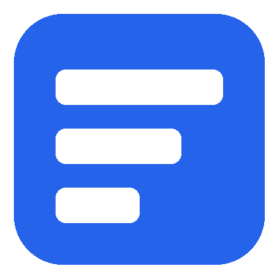

Про автора
Мене звати Роман Левчук. Я навчаюся в групі ІПЗ-3/2 і створюю навчальний проєкт TaskBoard на курсі веб-технологій.
Зараз я вивчаю основи HTML, Git та GitHub, а далі планую додати CSS, JavaScript і серверну частину на Flask.

TaskBoardМене звати Роман Левчук. Я навчаюся в групі ІПЗ-3/2 і створюю навчальний проєкт TaskBoard на курсі веб-технологій.
Зараз я вивчаю основи HTML, Git та GitHub, а далі планую додати CSS, JavaScript і серверну частину на Flask.
| Етап | Що вивчаю | Статус |
|---|---|---|
| 1 | HTML і Git | Виконується |
| 2 | CSS | Заплановано |
| 3 | JavaScript | Заплановано |
| 4 | Flask і база даних | Заплановано |
Пошта: levchuk.r.s_ipz24@rcit.ukr.education
GitHub: github.com/Roman-Invoker